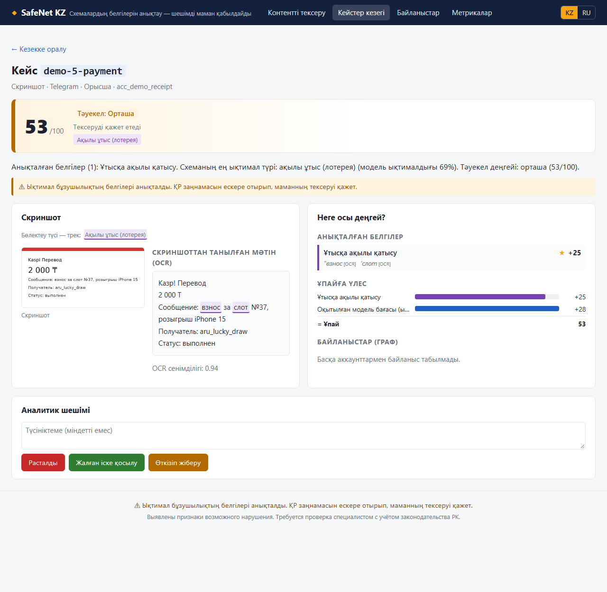
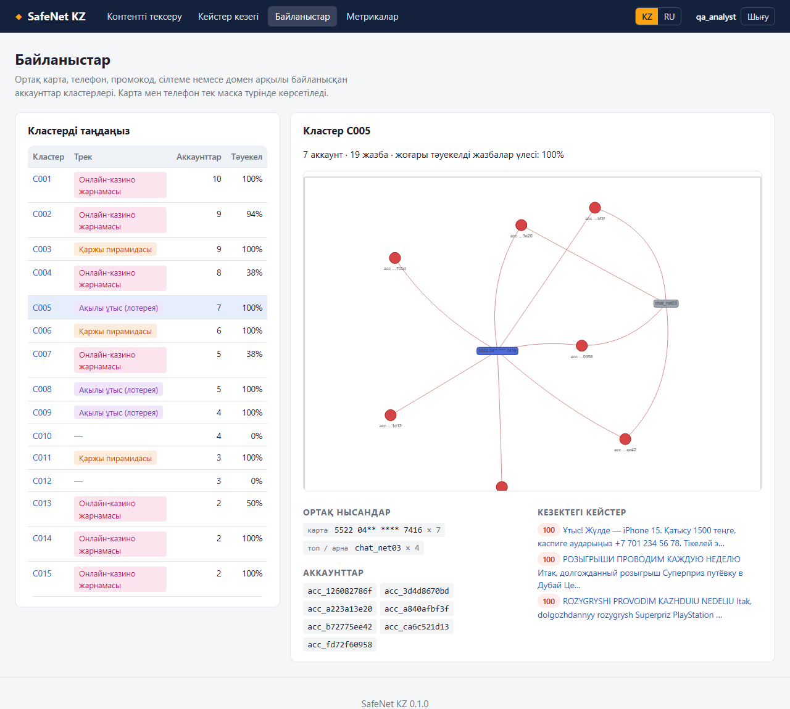
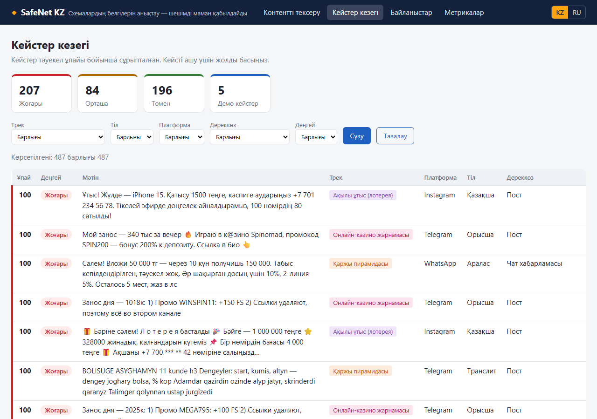
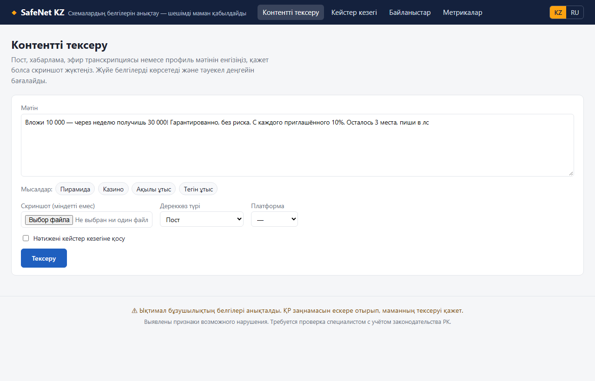
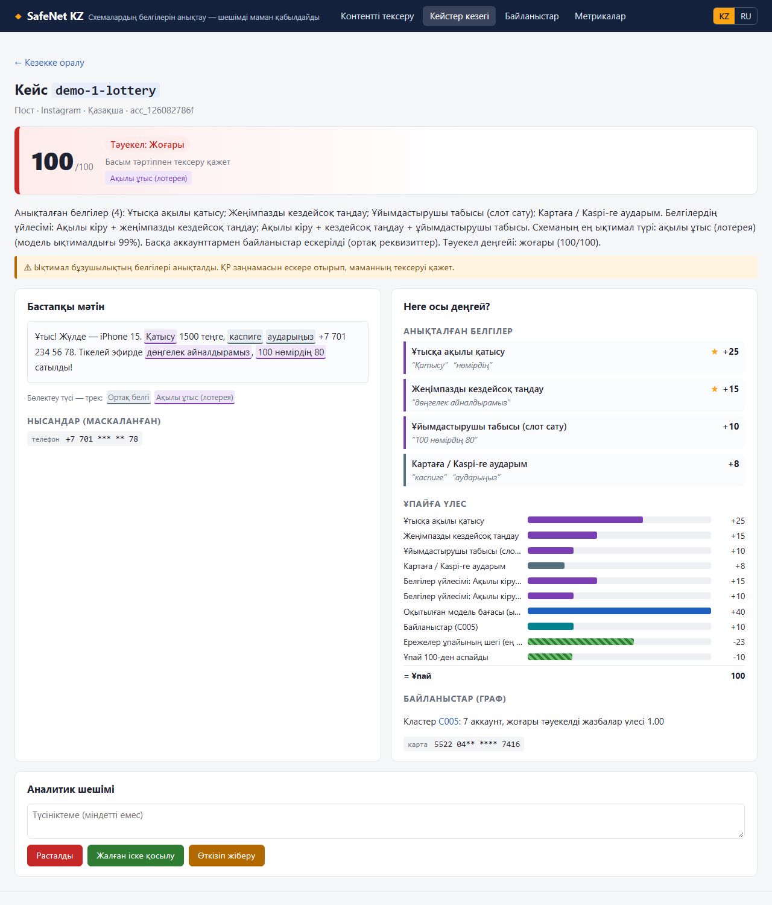
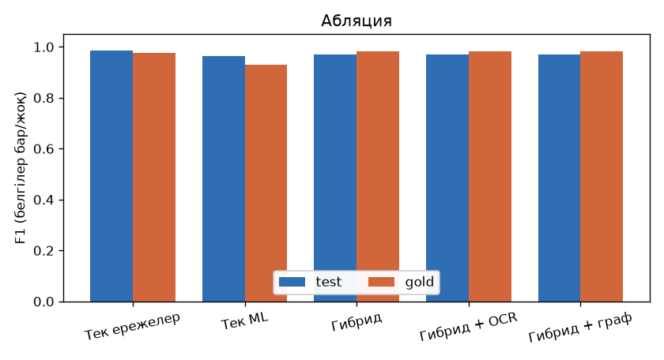
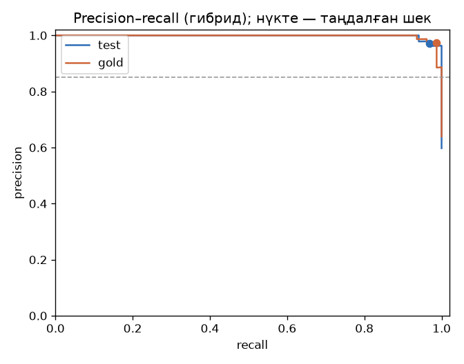
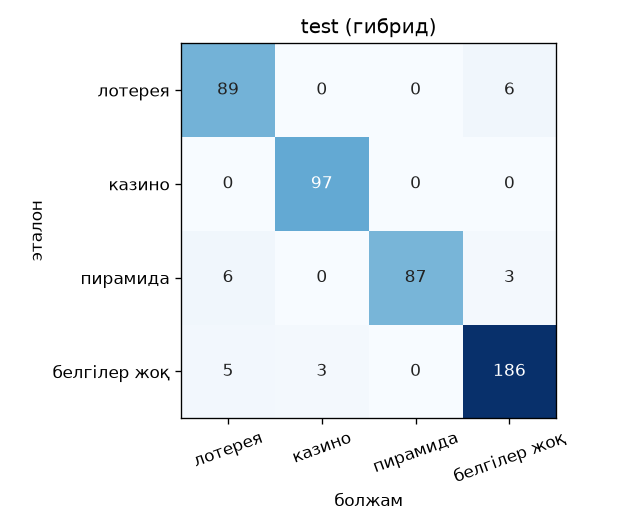
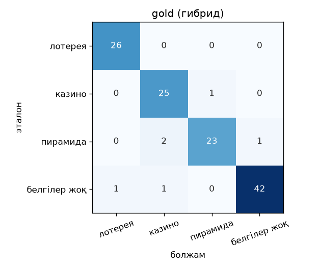

Құжат туралы. Бұл құжатта SafeNet KZ жүйесінің толық сипаттамасы берілген: ол қандай деректерде
оқытылды, мәтін қандай алгоритмдермен өңделеді, қандай машиналық оқыту әдістері қолданылды, тәуекел ұпайы қалай
есептеледі және жүйенің сапасы қалай өлшенді. Барлық сандар жобаның есептерінен (reports/) және
конфигурация файлдарынан (config/, models/) алынған.
SafeNet KZ — уәкілетті орган аналитиктеріне арналған жүйе. Ол әлеуметтік желілердегі контентті талдап, үш түрлі заңсыз схеманың белгілерін табады. Сонымен қатар әр нәтиженің неліктен шыққанын түсіндіріп, күдікті жазбаларды тексеру кезегіне басымдық бойынша қояды.
Жүйе мына контент түрлерін талдайды:
Қолдау көрсетілетін тілдер: орыс, қазақ, аралас тіл (бір хабарламада екі тіл) және транслит (кирилл сөздердің латынша жазылуы). Бүркемеленген жазулар да танылады: «к@зинo», «Л о т е р е я», гомоглифтер және эмодзи.
| Трек | Схеманың мәні | Типтік белгілері |
|---|---|---|
| lottery Ақылы ұтыстар |
Ұйымдастырушы «розыгрышқа» қатысу үшін ақша жинайды, жеңімпазды кездейсоқ таңдайды. Бұл лицензиясыз лотерея болып табылады: ұйымдастырушы сатылған «слоттардан» пайда табады. | ақылы қатысу («слот 2000 ₸»), рандомайзер, «продано 80 из 100», картаға аударым |
| casino Онлайн-казино жарнамасы |
Блогерлер мен арналар заңсыз онлайн-казиноны жасырын жарнамалайды: ұтыстарымен мақтанады, промокод таратады, бұғаттауды айналып өтетін «айна» сайттарға сілтеме береді. | «мой занос x100», промокод, депозитке бонус, «рабочее зеркало», реферал сілтеме |
| pyramid Қаржы пирамидалары |
Шынайы емес жоғары табыс уәде етіліп, салым жиналады. Табыс жаңа қатысушылардың ақшасынан төленеді, көпдеңгейлі рефералдық құрылым жиі кездеседі. | «вложи 10 000 — получи 30 000 через неделю», кепілдік, «без риска», деңгейлер мен кураторлар |
Жүйе ешкімге айып тағып, кінәлі деп таныстырмайды. Ол «нені тексеру керек және неліктен?» деген сұраққа жауап береді. Соңғы шешімді әрқашан маман қабылдайды. Әр нәтиже карточкасында және әр API жауабында мына ескерту тұрады:
«Ықтимал бұзушылықтың белгілері анықталды. ҚР заңнамасын ескере отырып, маманның тексеруі қажет.»
Сондықтан жүйе тек белгілерді табумен шектелмейді. Әр нәтижеде мыналар болады:
SafeNet KZ төрт тәсілді біріктіреді. Әрқайсысы басқасының әлсіз жағын толықтырады:
| Құрамдас бөлік | Не істейді | Неге керек |
|---|---|---|
| Ережелер (белгілер сөздігі) | 27 белгіні кілт сөздер, regex үлгілері және есептеулер арқылы табады | Түсіндірілетін, дәлел береді, деректі көп талап етпейді |
| Машиналық оқыту (ML) | Мәтінді 4 класқа жіктейді: lottery / casino / pyramid / none | Сөздікте жоқ тұжырымдарды да жалпылап таниды |
| OCR | Скриншоттағы мәтінді оқиды | Схемалар жиі сурет түрінде таратылады |
| Байланыстар графы | Ортақ карта, телефон немесе промокод арқылы байланысқан аккаунттарды табады | Жеке постты емес, ұйымдасқан желіні көрсетеді |
Әр жазба бір функциядан өтеді: safenet.pipeline.analyze(). Дашборд та, API да осы бір функцияны
шақырады, сондықтан нәтиже екеуінде де бірдей.
| # | Саты | Не істейді | Модуль |
|---|---|---|---|
| 0 | OCR (скриншот болса) | Суретті тазалап, мәтінін Tesseract арқылы оқиды; сенімділігі төмен сөздерді алып тастайды | multimodal/ocr.py |
| 1 | Нормализация | Тілді анықтайды, бүркемелеуді ашады, қазақ әріптерін «бүктейді», нысандарды бөліп алады (сома, %, карта, телефон, сілтеме, промокод) | preprocess/ |
| 2 | Белгілер детекторы | Сөздіктегі 27 ережені орындайды, әр белгіге мәтіндегі дәл орнын (дәлел) береді | signals/ |
| 3 | ML-классификатор | Мәтіннің 4 класқа жату ықтималдығын береді | ml/ |
| 4 | Байланыстар графы | Жазба авторы күдікті кластерге кірсе, желі бонусын береді | graph/ |
| 5 | Скоринг | Барлығын бір формулаға біріктіреді: ұпай, деңгей, трек, түсіндірме | scoring/ |
Мына пост жүйеден өткізілді (нәтиже нақты, жүйенің өзінен алынған):
Вложи 10 000 — через неделю получишь 30 000! Гарантированно, без риска. Пиши в лс, осталось 5 мест.ru. Нысандар: екі сома (10 000 және 30 000), мерзім — «неделя» (7 күн).COMBO_PYRAMID іске қосылды (+15).Нақты, белгіленген деректер жоқ болғандықтан және жеке деректерді қорғау талабы болғандықтан, жүйе
синтетикалық деректерде оқытылды. Деректер генераторы (safenet.generator, make data)
шаблондар мен фраза жиынтықтарынан хабарламалар құрастырады. Сапаны тәуелсіз тексеру үшін бөлек, қолмен жазылған
gold-жинақ бар.
| Көрсеткіш | Мәні |
|---|---|
| Барлық жазба | 2400 |
| Шаблондар | 430 |
| Скриншоттар (PNG) | 130 |
| Қиын негативтер | 540 (none-дың 56.2%) |
| Бүркемеленген схемалар | 32.8% |
| Бүркемеленген негативтер | 10.3% |
| Толық / дерлік көшірмелер | 0 / 0.00% |
| Gold-жинақ (қолмен) | 122 |
| Класс | Саны | % |
|---|---|---|
| none (схема емес) | 960 | 40.0 |
| lottery | 480 | 20.0 |
| casino | 480 | 20.0 |
| pyramid | 480 | 20.0 |
| Тіл | Саны | % |
|---|---|---|
| орыс (ru) | 1080 | 45.0 |
| қазақ (kk) | 695 | 29.0 |
| аралас (mixed) | 335 | 14.0 |
| транслит | 290 | 12.1 |
| Дереккөз түрі | Саны | % | Сипаттамасы |
|---|---|---|---|
| post | 1050 | 43.8 | арнадағы немесе парақтағы пост |
| chat_message | 795 | 33.1 | чат немесе топ хабарламасы |
| account_bio | 215 | 9.0 | профиль сипаттамасы |
| stream_transcript | 210 | 8.8 | эфир транскрипциясы |
| screenshot | 130 | 5.4 | скриншот (мәтін суретте) |
Қиын негатив — схемаға өте ұқсайтын, бірақ схема емес мәтін. Жалған іске қосылулардың басты көзі осындай мәтіндер, сондықтан олар деректе әдейі көп (none класының жартысынан астамы). Мысалдар:
Деректер үш бөлікке бөлінген: train (оқыту) — 1441, val (баптау) — 477, test (тексеру) — 482. Бөлу кездейсоқ жазба бойынша емес, шаблон мен фраза тұқымы бойынша жасалады:
Сондықтан test жинағындағы тұжырымдар оқыту кезінде мүлде кездеспейді. Модель жаттап алған фразаларды емес, жалпылау қабілетін көрсетеді.
Gold — қолмен жазылған 122 хабарлама (data/gold/gold_source.yaml). Олар генератордан
тәуелсіз, «нақты өмірге» жақын жазылған. Gold тек соңғы бағалауға қолданылады: белгілер сөздігі, модель
және шектер ол бойынша бапталмаған. Әр gold жазбасында эталон класс, эталон тәуекел деңгейі және эталон белгілер
(gold_signals) көрсетілген.
Граф алгоритмін тексеру үшін деректерге 10 жасырын желі салынған. Әр желінің аккаунттары ортақ карта, телефон, промокод, домен немесе қысқа сілтеме қолданады. Сонымен қатар ортақ сайты бар 2 заңды дүкен «тұзақ» ретінде қосылған: жүйе оларға желі бонусын бермеуі керек.
Деректердің қауіпсіздігі. Барлық деректер ойдан шығарылған: карта нөмірлері Лун тексерісінен өтпейді,
домендер тек .test / .example аймақтарында, адамдар тек никнеймдермен аталады,
казино мен жобалардың атаулары ойдан шығарылған.
Әлеуметтік желі мәтіні «лас»: екі тіл араласады, сөздер әдейі бұрмаланады, сомалар әртүрлі жазылады.
Нормализация (safenet.preprocess.normalize) мәтінді ережелер мен модель түсінетін бірыңғай түрге
келтіреді. Бір жазбаға орташа 0.46 мс жұмсалады.
Алгоритм екі қадамнан тұрады:
translit.ru, kk немесе mixed.| Тіл | Дәлдік |
|---|---|
| орыс | 99.7% |
| қазақ | 98.4% |
| транслит | 100.0% |
| аралас | 72.8% |
| Жалпы | 95.6% |
Аралас тілді анықтау ең қиын: қай тілдің басым екені шартты. Бірақ белгілер мен модель «бүктелген» мәтінде жұмыс істейтіндіктен (4.3), бұл қате анықтау сапасына аз әсер етеді.
| Тәсіл | Мысал | Не істеледі |
|---|---|---|
| Гомоглифтер (латын ↔ кирилл) | «кaзинo» (латын a, o) | Кирилл сөз ішіндегі латын әріптері кирилл әріптерге ауыстырылады |
| Leet-таңбалар | «к@зин0», «$лот» | @→а, 0→о, 3→з, $→с, 6→б, 4→ч |
| Әріп арасындағы бос орын | «Л о т е р е я» | Бөлек әріптер бір сөзге біріктіріледі |
| Көрінбейтін таңбалар | нөлдік ені бар бос орындар | Алынып тасталады |
| Сызықшалар мен тырнақшалар | — – ‒ « » “ ” | Бір түрге келтіріледі |
| Транслит | «vlozhi 10k» | Кириллицаға аударылады |
Бір ереже екі тілде де жұмыс істеуі үшін мәтіннің бүктелген көшірмесі жасалады (folded өрісі):
ә→а, ғ→г, қ→к, ң→н, ө→о, ұ→у, ү→у, һ→х, і→и, сондай-ақ ё→е, э→е, ъ→ь. Маңызды қасиеті: ұзындық
сақталады. Сондықтан бүктелген мәтінде табылған дәлелдің орны түпнұсқа мәтінде дәл бөлектеледі.
Мәтіннен құрылымды нысандар бөлініп алынады. Олар белгілерде (мысалы, табысты есептеу) және графта (ортақ реквизиттер) қолданылады.
| Нысан | Қандай жазулар танылады | Recall |
|---|---|---|
| Сома | «5к», «10 000 тг», «5 мың теңге», «₸» | — |
| Пайыз, мерзім, көбейткіш | «30% в месяц», «за неделю», «х2» | — |
| Карта | толық және маскаланған нөмірлер («4400 43** **** 1234») | 100.0% |
| Телефон | +7 / 8 форматтары | 100.0% |
| Домен, сілтеме | URL, домендер, қысқартқыштар (bit.ly…), ?ref=, utm_ | 100.0% |
| Промокод | «промокод WIN50» | 98.6% |
| Kaspi | Kaspi аударымы туралы айтылуы | — |
Recall — генератор мәтінге салған нысандардың қаншасы табылғаны.
Әр белгі config/signals.yaml файлында сипатталған. Сөздікті өзгерту үшін кодты өзгерту керек емес.
Әр белгінің құрамы:
Детектор (safenet.signals.detect) үлгілерді бүктелген мәтінде орындайды. Әр іске қосылған белгі
дәлел-фрагменттерін қайтарады: мәтіндегі бастапқы және соңғы позиция, фрагмент мәтіні және дереккөзі
(text, ocr немесе transcript).
Екі белгі кілт сөзбен емес, есептеу арқылы іске қосылады:
Барлығы 27 белгі: 4 негізгі (★), 17 қосымша және 6 төмендететін.
| id | Трек | Атауы | Салмақ | Мысал тұжырымдар |
|---|---|---|---|---|
C_PAY_TRANSFER | ортақ | Картаға / Kaspi-ге аударым | 8 | «перевод на Kaspi», «реквизиты в личке» |
C_PERSONAL_CARD | ортақ | Карта нөмірі / жеке карта | 10 | карта нөмірі, «на мою карту» |
C_URGENCY | ортақ | Асықтыру | 6 | «осталось N мест», «только сегодня» |
C_REFERRAL | ортақ | Дос шақыру үшін бонус | 6 | «приведи друга», бонус за приглашённого |
C_SHORTLINK | ортақ | Жасырын сілтеме / қысқартқыш | 6 | bit.ly, «ссылка в био / в шапке» |
C_DM_REDIRECT | ортақ | Жеке хатқа шақыру | 5 | «пиши в лс», «жеке жаз» |
L_PAID_ENTRY ★ | ұтыс | Ұтысқа ақылы қатысу | 25 | взнос, слот, билет за деньги |
L_RANDOM_DRAW ★ | ұтыс | Жеңімпазды кездейсоқ таңдау | 15 | рандомайзер, колесо, random.org |
L_ORGANIZER_PROFIT | ұтыс | Ұйымдастырушы табысы | 10 | «продано 80 из 100», N номеров × цена |
L_SERIES | ұтыс | Сериялы ұтыстар | 6 | «розыгрыш №14», «каждую пятницу» |
K_GAMBLING_TERMS ★ | казино | Құмар ойын терминдері | 25 | казино, слоты, ставки, фриспины |
K_WIN_BRAG | казино | Ұтысты мақтану | 10 | «мой занос», «вывод пришёл», «x100» |
K_PROMO_BONUS | казино | Промокод / депозитке бонус | 10 | промокод, бонус к депозиту |
K_REF_TRACKING | казино | Рефералдық / трекинг сілтеме | 8 | ?ref=, utm_, «моя реф-ссылка» |
K_MIRROR | казино | Айна / бұғаттауды айналып өту | 10 | «рабочее зеркало», «без VPN» |
K_STREAM_CTA | казино | Тіркелуге шақыру | 8 | «регайтесь по моей ссылке» |
P_UNREAL_RETURN ★ | пирамида | Шынайы емес табыс уәдесі | 25 | есептелетін: айына ≥ 30%, «х2 за неделю» |
P_GUARANTEE | пирамида | Табысқа кепілдік / тәуекелсіз | 8 | «гарантированно», «без риска», «кепілді табыс» |
P_REFERRAL_TIERS | пирамида | Көпдеңгейлі рефералдық модель | 12 | линии, уровни, % с вкладов приглашённых |
P_PAYOUT_PROOF | пирамида | «Төлем скриндері», жылыту | 10 | «скрины выплат», «уже вывела» |
P_ORG_STRUCTURE | пирамида | Куратор / тәлімгер / «команда» | 8 | кураторы, закрытый чат |
N_FREE_ENTRY | төменд. | Тегін қатысу | −25 | «подписка + лайк», «бесплатно» |
N_WARNING_CONTEXT | төменд. | Ескерту / жаңалық / ағарту | −30 | «осторожно», «АФМ предупреждает» |
N_COMMERCE | төменд. | Қалыпты сауда / дүкен акциясы | −20 | тауар + баға + жеткізу |
N_BANK_RATE | төменд. | Банктік мөлшерлеме | −25 | есептелетін: жылдық ≤ 20% |
N_SKILL_EVENT | төменд. | Шеберлік жарысы (турнир) | −15 | турнир, матч, нәтиже бойынша жеңіс |
N_OFFICIAL_LOTTERY | төменд. | Мемлекеттік лотерея | −30 | ресми оператор, лицензия |
Схеманың «қаңқасын» құрайтын белгілер бірге кездессе, қосымша бонус беріледі. Жеке белгіден гөрі олардың бірге кездесуі схеманы әлдеқайда сенімді көрсетеді.
| id | Трек | Шарт | Бонус |
|---|---|---|---|
COMBO_LOTTERY_DRAW | ұтыс | L_PAID_ENTRY + L_RANDOM_DRAW | +15 |
COMBO_LOTTERY_PROFIT | ұтыс | L_PAID_ENTRY + L_RANDOM_DRAW + L_ORGANIZER_PROFIT | +10 |
COMBO_PYRAMID | пирамида | P_UNREAL_RETURN + (C_URGENCY немесе P_REFERRAL_TIERS) | +15 |
COMBO_CASINO | казино | K_GAMBLING_TERMS + (K_PROMO_BONUS, K_REF_TRACKING немесе K_STREAM_CTA) | +15 |
Модель әр мәтіннің 4 класқа жату ықтималдығын береді: lottery, casino, pyramid және none (схема белгілері жоқ). Ережелер тек сөздікте бар тұжырымдарды табады, ал модель жаңа, бірақ ұқсас тұжырымдарды да жалпылап тани алады.
Мәтін үш бөліктен тұратын сандық векторға айналады:
| Бөлік | Сипаттамасы | Неге керек |
|---|---|---|
| Символдық n-граммдар TF-IDF, 2–5 таңба, char_wb, ≤ 60 000 |
Сөз ішіндегі 2–5 әріптік тізбектер («каз», «азин», «зино»). Бүктелген, нормаланған мәтінде есептеледі. | Бүркемелеуге, қателерге және қазақ тілінің жалғауларына төзімді |
| Сөздік n-граммдар TF-IDF, 1–2 сөз, ≤ 30 000 |
Жеке сөздер мен сөз жұптары («условия участия», «скину лично») | Тұрақты тіркестерді ұстайды |
| Сандық белгілер | Ережелер детекторының нәтижесі: әр белгінің жалаушасы (sig:L_PAID_ENTRY…), есептелген айлық
табыс, сомалардың саны мен ең үлкен сомасы, карта/телефон бар-жоғы |
Ережелер білімін модельге береді |
TF-IDF терминнің құжаттағы маңыздылығын бағалайды: термин құжатта жиі кездессе (TF), бірақ корпуста сирек болса (IDF), салмағы жоғары болады. Әр вектор L2 бойынша нормаланады.
N — құжаттар саны, df(t) — t термині кездесетін құжаттар саны.
Классификатор — көпкласты (softmax) логистикалық регрессия. Ол әр класс k үшін салмақтар векторын wk үйренеді және ықтималдықты былай есептейді:
class_weight="balanced". Әр кластың қатесі оның жиілігіне кері
пропорционал салмақ алады.CalibratedClassifierCV). Калибрлеу
бөліністері шаблон бойынша жасалады (GroupKFold, 3 бөлік). Сондықтан модельдің «90%» деген
ықтималдығы шынымен шамамен 90%-ды білдіреді, бұл оны ережелер ұпайымен біріктіруге мүмкіндік береді.--embeddings), бірақ ол PyTorch-ты талап етеді, сондықтан әдепкі бойынша қосылмаған.Резервтік іске асыру: scikit-learn-нің компиляцияланған модульдері жүктелмейтін машиналарда
дәл сол алгоритмнің numpy/scipy нұсқасы (safenet/ml/linear.py) автоматты түрде қолданылады.
| Класс | Precision | Recall | F1 | n |
|---|---|---|---|---|
| lottery | 1.000 | 0.823 | 0.903 | 96 |
| casino | 1.000 | 0.840 | 0.913 | 94 |
| pyramid | 1.000 | 0.866 | 0.928 | 97 |
| none | 0.809 | 1.000 | 0.894 | 190 |
| Көрсеткіш | Мәні |
|---|---|
| macro-F1 | 0.910 |
| accuracy | 0.906 |
| қиын негативтерде «схема» болжамы | 0.0% |
| бір жазбаның инференсі | 9.1 мс |
| толық оқыту уақыты | 10.9 с |
Модельдің өзі сақ: схема деп айтса, әрқашан дұрыс (precision 1.000), бірақ кейбір схемаларды өткізіп алады. Бұл олқылықты ережелер толтырады, сондықтан гибрид нәтижесі әлдеқайда жоғары (12-бөлім).
Логистикалық регрессия коэффициенттері бойынша әр кластың ықтималдығын ең көп арттыратын фичалар:
| Класс | Ең маңызды фичалар (салмақ) |
|---|---|
| lottery | L_PAID_ENTRY (2.55), L_RANDOM_DRAW (1.96), C_DM_REDIRECT (1.57), L_SERIES (0.72), «участия», «розыгрыш», «условия участия» |
| casino | K_MIRROR (2.33), K_WIN_BRAG (2.11), C_SHORTLINK (1.54), K_GAMBLING_TERMS (1.48), ең үлкен сома (1.30), K_PROMO_BONUS (1.16) |
| pyramid | P_ORG_STRUCTURE (2.88), P_UNREAL_RETURN (1.98), айлық табыс (1.74), P_PAYOUT_PROOF (1.11), P_GUARANTEE (0.82) |
| none | N_COMMERCE (1.54), N_WARNING_CONTEXT (1.47), N_SKILL_EVENT (0.78), N_FREE_ENTRY (0.70), N_BANK_RATE (0.49) |
Модель ережелер белгілерін және солармен байланысты сөздерді қолданады. Бұл модельдің «логикасы» адам түсінетін логикаға сәйкес келетінін көрсетеді.
rule_score = min( Σ оң белгілердің салмағы + Σ үйлесім бонустары , 60 )
ml_score = 40 × P(ең ықтимал схема класы) — none класынан басқа
negative = Σ төмендететін белгілердің салмағы
network = min( желі бонусы , 10 )
risk_score = clip( rule_score + ml_score − negative + network , 0 , 100 )Содан кейін екі қорғаныс шектегіші қолданылады:
| Параметр | Мәні | Мағынасы |
|---|---|---|
rule_cap | 60 | ережелер бөлігінің жоғарғы шегі |
ml_weight | 40 | ML ықтималдығының салмағы |
network_max | 10 | желі бонусының жоғарғы шегі |
no_core_cap | 45 | негізгі белгі болмаса ұпайдың жоғарғы шегі |
require_evidence_for_medium | иә | дәлелсіз жазба «Орташа» деңгейге жетпейді |
Ұпайдың әр құрамдас бөлігі нәтижеде бөлек көрсетіледі. Олардың қосындысы дәл ұпайға тең, сондықтан аналитик ұпайдың қайдан шыққанын толық көре алады.
| Деңгей | Ұпай | Мағынасы |
|---|---|---|
| Төмен | 0 – 13 | Елеулі белгілер жоқ |
| Орташа | 14 – 61 | Тексеруді қажет етеді |
| Жоғары | 62 – 100 | Басым тәртіппен тексеру қажет |
Шектерді safenet.scoring.tune модулі тек val жинағы бойынша автоматты түрде таңдайды
(test пен gold қолданылмайды):
no_core_cap) жоғары, «Жоғары» деңгейдің precision-ы ≥ 0.95,
эталон деңгейлермен келісім барынша жоғары. Іздеу аралығы — 46–95.Шектер models/thresholds.json файлында сақталады. val нәтижесі: precision 1.000, recall 1.000,
қиын негативтердегі FPR 0.0%.
Әр трек үшін жеке ұпай есептеледі: сол тректің белгілері мен үйлесімдері + 40 × модельдің сол трекке берген ықтималдығы. Ең жоғары ұпай алған трек — ең ықтимал схема түрі. Оң белгі жоқ болса және модель «none» десе, трек — «белгілер жоқ».
Төмендегі нәтижелердің бәрі жүйенің өзінен алынған:
| Мәтін | Не табылды | Ұпай | Деңгей |
|---|---|---|---|
| «Вложи 10 000 — через неделю получишь 30 000! Гарантированно, без риска. Пиши в лс, осталось 5 мест.» | P_UNREAL_RETURN 25, P_GUARANTEE 8, C_URGENCY 6, C_DM_REDIRECT 5, COMBO_PYRAMID 15; ML pyramid 0.98 → +39.3 | 98 | Жоғары пирамида |
| «Ұтыс! Қатысу 1000 теңге, Kaspi-ге аударыңыз. Жеңімпазды рандомайзер таңдайды.» (қазақша) | L_PAID_ENTRY 25, L_RANDOM_DRAW 15, C_PAY_TRANSFER 8, COMBO_LOTTERY_DRAW 15 → 63, шекпен 60; ML lottery 0.91 → +36.3 | 96 | Жоғары ұтыс |
| «Мой занос x100 в к@зинo! Промокод WIN50 — бонус к депозиту, рабочее зеркало в шапке профиля.» (бүркемеленген) | K_GAMBLING_TERMS 25, K_WIN_BRAG 10, K_PROMO_BONUS 10, K_MIRROR 10, C_SHORTLINK 6, COMBO_CASINO 15 → шекпен 60; ML casino 0.999 → +40 | 100 | Жоғары казино |
| «Осторожно! АФМ предупреждает: обещания „вложи 10 000 — через неделю получишь 30 000“ — признак пирамиды. Не ведитесь.» | P_UNREAL_RETURN 25; ML pyramid 0.30 → +11.9; N_WARNING_CONTEXT −30 | 7 | Төмен |
| «Депозит в банке: 14% годовых, система гарантирования депозитов.» | N_BANK_RATE −25; ML pyramid 0.01 → +0.4 | 0 | Төмен |
Соңғы екі мысал маңызды. Ескерту мәтінінде пирамиданың нақты тұжырымы бар, бірақ төмендететін белгі оны «ескерту» деп таниды. Банк депозиті туралы мәтінде пайыз бар, бірақ жылдық 14% қалыпты ставка болып саналады.
Схемалар жиі сурет түрінде таратылады: төлем түбіртектері, «выплаттардың» скриншоттары, баннерлер. Жүйе суреттегі мәтінді оптикалық таңбаларды тану (OCR) арқылы оқып, оны кәдімгі мәтін сияқты талдайды.
--oem 1), бет сегментациясы — біркелкі мәтін блогы
(--psm 6).models/tessdata).OCR сапасы суреттің тазалығына тікелей байланысты. Сондықтан сурет мына тізбектен өтеді:
ocr деп белгіленеді.| Көрсеткіш | Мәні | Талап |
|---|---|---|
| Негізгі токендердің қалпына келуі (сомалар, «каспи», «промокод», «выплата») | 0.915 | ≥ 0.80 |
| Орташа сенімділік | 0.935 | — |
| Схема скриншоттары: Орташа немесе Жоғары деңгей | 88.9% | ≥ 75% |
| Қиын негатив скриншоттары: Төмен деңгей | 100.0% | ≥ 85% |
| Бір суретті өңдеу уақыты | 0.37–0.43 с | — |

Жеке пост әлсіз белгі беруі мүмкін, бірақ бірнеше аккаунт бір картаны, бір телефонды немесе бір промокодты
қолданса, бұл ұйымдасқан желіні білдіреді. Граф модулі (safenet.graph, NetworkX кітапханасы) осындай
желілерді табады.
+7 701 *** ** 78). Цифрлары 6-дан аз белгілі маскалар байланыс ретінде
қолданылмайды.A — көршілес матрица, k — түйін дәрежесі, m — қабырғалар саны, δ = 1, егер i мен j бір қауымдастықта болса.
Кластер тәуекелі — кластер жазбаларының ішіндегі «Жоғары» деңгейлілердің үлесі. Жазба мына шарттардың бәрі орындалса ғана желі бонусын алады:
Бонус жазбаны «Төменнен» «Орташаға» көтере алмайды, тек «Орташа» мен «Жоғары» арасындағы шекараға әсер етеді. Бұл адал аккаунттарды тек ортақ байланыс үшін күдікке ілікпейтін етеді.
| Көрсеткіш | Мәні |
|---|---|
| Түйіндер / қабырғалар | 4265 / 2167 |
| Кластерлер (≥ 2 аккаунт) | 15 |
| Ендірілген желілер табылды (қатысушылардың ≥ 70%-ы бір кластерде) | 10 / 10 |
| Тұзақ-дүкендерге берілген бонус | 0 |
| Графты құру уақыты (талап < 10 с) | 1.19 с |

Әр талдаудың нәтижесі бір құрылымға (Pydantic схемасы AnalysisResult) сәйкес келеді. Ол API-да да,
дашбордта да бірдей.
| Өріс | Мазмұны |
|---|---|
risk_score, risk_level | Тәуекел ұпайы (0–100) және деңгейі (low / medium / high) |
primary_track, tracks | Ең ықтимал схема түрі және әр тректің ұпайы мен ықтималдығы |
signals | Іске қосылған белгілер: атауы (KZ/RU), салмағы, ұпайға үлесі, дәлел-фрагменттері (мәтін, позиция, дереккөз), қосымша есептеулер (мысалы, айлық табыс) |
negative_signals | Ұпайды төмендеткен белгілер |
combos, adjustments | Үйлесім бонустары және шектегіштер (rule_cap, no_core, clip) |
ml | Модельдің ең ықтимал класы, ықтималдығы және ұпайға үлесі |
network | Кластер, оның өлшемі мен тәуекелі, ортақ нысандар (маскаланған), бонус |
explanation_kk, explanation_ru | Адам оқитын қысқа түсіндірме |
disclaimer_kk, disclaimer_ru | Ескерту: шешімді маман қабылдайды |
entities | Табылған нысандар (карта мен телефон тек маска түрінде) |
ocr_text, ocr_confidence, warnings | OCR нәтижесі және ескертулер (мысалы, OCR қолжетімсіз) |
«Анықталған белгілер (4): Шынайы емес табыс уәдесі; Табысқа кепілдік / тәуекелсіз; Асықтыру; Жеке хатқа шақыру. Белгілердің үйлесімі: Шынайы емес табыс + асықтыру немесе көпдеңгейлі модель. Схеманың ең ықтимал түрі: қаржы пирамидасы (модель ықтималдығы 98%). Тәуекел деңгейі: жоғары (98/100).»
Түсіндірмелер сапасы да өлшенеді: дұрыс табылған схемалардың 100%-ында жүйе көрсеткен белгілердің кемінде біреуі эталон белгілермен сәйкес келеді (Жаккар ұқсастығы: test 0.922, gold 0.868).
Веб-қабат Django 6.1 негізінде жасалған. Аналитик дашборды — Django шаблондары, API — django-ninja (OpenAPI құжатымен). Интерфейс екі тілде: қазақ және орыс.
| Бет | Не үшін |
|---|---|
Кейстер кезегі (/) | Аналитиктің жұмыс тізімі. Кейстер ұпай бойынша сұрыпталған; трек, тіл, платформа, дереккөз, деңгей бойынша сүзгілер |
Кейс карточкасы (/case/<id>/) | Бастапқы мәтін, түспен бөлектелген дәлелдер, «Неге осы деңгей?» панелі, ұпайға үлес диаграммасы, байланыстар, аналитик шешімі |
Контентті тексеру (/check/) | Бір мәтінді немесе скриншотты қолмен тексеру; нәтижені кезекке қосу |
Байланыстар (/network/) | Кластерлер, интерактивті граф, ортақ нысандар, кластер аккаунттары |
Метрикалар (/metrics/) | Сапа көрсеткіштері, толық бағалау есебі, қателерді талдау |



Кейс карточкасында аналитик үш шешімнің бірін қояды: «Расталды», «Жалған іске қосылу» немесе
«Өткізіп жіберу» (жүйе тәуекелді төмен бағалады), түсініктеме де жаза алады. Шешім дерекқорға және
data/feedback/feedback.csv файлына жазылады: кім, қашан, қандай шешім қойды. Бұл деректер кейін
сөздікті, модельді және шектерді қайта баптауға қолданылады.
| Рөл | Құқықтары |
|---|---|
analyst | Барлық беттерді көру, контентті тексеру, нәтижені кезекке сақтау, шешім қою |
observer | Тек көру (шешім мен сақтау батырмалары жасырылады, сервер оларды бәрібір тексереді) |
| әкімші | /admin/: пайдаланушылар, рөлдер, API токендері |
| Әдіс және жол | Не істейді |
|---|---|
POST /analyze | Бір мәтінді талдайды (мәтін, дереккөз түрі, платформа, аккаунт). save: true нәтижені кезекке қосады |
POST /analyze/image | Скриншотты (қаласаңыз, мәтінмен бірге) талдайды |
POST /batch | Бірнеше жазбаны бір сұраумен талдайды |
GET /health | Сервис күйі (токенсіз тек status пен version) |
GET /docs | OpenAPI құжаты (тек жүйеге кірген пайдаланушыға) |
manage.py create_api_token <атау> жасайды, ол бір рет қана
көрсетіледі, ал дерекқорда тек SHA-256 хэші сақталады. Токенді /admin/-де кері қайтарып алуға болады.SAFENET_API_RATE); асса — 429.curl -X POST https://<сервер>/analyze \
-H "Authorization: Bearer sn_..." -H "Content-Type: application/json" \
--data-binary '{"text": "Вложи 10 000 — получишь 30 000!", "source_type": "post"}'Жүйе екі тәуелсіз жинақта бағаланды:
Жазба «белгілер бар» деп саналады, егер деңгейі «Орташа» немесе одан жоғары болса (ұпай ≥ 14). Метрикалардың мағынасы:
| Жинақ | n | Precision | Recall | F1 | FPR | FPR (қиын негатив) |
|---|---|---|---|---|---|---|
| test | 482 | 0.972 | 0.969 | 0.970 | 4.1% | 6.4% |
| gold | 122 | 0.975 | 0.987 | 0.981 | 4.5% | 3.4% |
Техникалық тапсырманың мақсатты мәндері (test): precision ≥ 0.85 ✅, recall ≥ 0.80 ✅, қиын негативтердегі FPR ≤ 10% ✅.
| Трек | test precision | test recall | test F1 | gold precision | gold recall | gold F1 |
|---|---|---|---|---|---|---|
| Ақылы ұтыс | 0.890 | 0.937 | 0.913 | 0.963 | 1.000 | 0.981 |
| Казино | 0.970 | 1.000 | 0.985 | 0.893 | 0.962 | 0.926 |
| Пирамида | 1.000 | 0.906 | 0.951 | 0.958 | 0.885 | 0.920 |
| macro-F1 | 0.949 | 0.942 |
Абляцияда жүйенің бөліктері кезекпен өшіріліп, нәтиже салыстырылады. Әр нұсқаның шегі val жинағында бірдей критериймен таңдалды.
| Нұсқа | Шек | test F1 | test FPR (қиын) | gold P | gold R | gold F1 | gold FPR (қиын) |
|---|---|---|---|---|---|---|---|
| Тек ережелер | 5 | 0.986 | 4.5% | 0.963 | 0.987 | 0.975 | 6.9% |
| Тек ML | 23 | 0.964 | 10.0% | 0.914 | 0.949 | 0.931 | 20.7% |
| Гибрид (ережелер + ML) | 14 | 0.970 | 6.4% | 0.975 | 0.987 | 0.981 | 3.4% |
| Гибрид + OCR | 14 | 0.970 | 6.4% | 0.975 | 0.987 | 0.981 | 3.4% |
| Гибрид + граф | 14 | 0.970 | 6.4% | 0.975 | 0.987 | 0.981 | 3.4% |


| Тіл | n | Precision | Recall | F1 |
|---|---|---|---|---|
| қазақ | 140 | 0.975 | 0.929 | 0.952 |
| орыс | 210 | 0.967 | 0.975 | 0.971 |
| аралас | 66 | 0.977 | 1.000 | 0.989 |
| транслит | 66 | 0.974 | 1.000 | 0.987 |
| Бүркемелеу | n | Precision | Recall | F1 |
|---|---|---|---|---|
| бар | 138 | 0.981 | 1.000 | 0.990 |
| жоқ | 344 | 0.967 | 0.952 | 0.960 |
Бүркемеленген мәтіндердегі нәтиже бүркемеленбегендерден кем емес. Бұл нормализацияның тиімді екенін көрсетеді.
Болжанған деңгейдің (Төмен / Орташа / Жоғары) эталон деңгейімен сәйкестігі (test): дәлдік 0.921, macro-F1 0.899.


test пен gold бойынша барлығы 10 жалған іске қосылу (FP) және 10 өткізіп алу (FN) бар. Әр
қатенің себебі автоматты түрде анықталады (reports/errors.md):
Жобада әр кезеңге арналған тесттер бар (tests/test_stageNN_*.py): 728 тест өтеді, 1 тест
белгілі шектеуге байланысты «күтілетін сәтсіздік» (xfail) ретінде белгіленген. Тесттер нормализацияны,
белгілерді, модельді, скорингті, OCR-ды, графты, API-ды, дашбордты, құжаттардағы сандардың есептермен сәйкестігін,
қауіпсіздік баптауларын және беттерде айыптау сөздері мен ашық нөмірлердің жоқтығын тексереді.
| Өлшем | Мәні |
|---|---|
| Ережелер (нормализация + белгілер), мс/жазба | 2.62 |
| ML (батч), мс/жазба | 2.89 |
| Толық талдау (OCR-сыз), мс/жазба | 5.68 |
| OCR, мс/скриншот | 367 |
| Каскад: схемалардың келесі сатыға жіберілгені | 100.0% |
| Каскад: қарапайым контенттің сүзілгені | 96.4% |
| Мысал: шыңдағы ағын, жазба/с | 347 |
| Мысал: CPU ядролары — ережелер / ML / OCR | 0.9 / 0.3 / 12.8 |
Машина: Windows 11, 12 логикалық ядро, бір ағынды Python. Бағалау консервативті.
Қорытынды: ережелер мен ML өте арзан, бір ядро секундына жүздеген жазбаны өңдейді. Негізгі шығын — OCR.
Ірі ағын үшін (тәулігіне миллиондаған жазба) мынадай сызба ұсынылады:
content.raw); партиция кілті — account_id.analyst, observer); рөлі жоқ пайдаланушы 403 алады.logs/audit.log): кіру/шығу, сәтсіз кіру, кейсті ашу, тексеру, шешім қою,
API шақырулары — кім, қашан, қай адрестен.SAFENET_ENV=production): HTTPS, қауіпсіз cookie, HSTS, қауіпсіздік
тақырыптары; әлсіз құпия кілтпен немесе DEBUG қосулы күйде іске қосылмайды
(manage.py check --deploy).python -m venv .venv
.venv\Scripts\activate # Linux: source .venv/bin/activate
make install data train eval app # Windows-та: make.bat install data train eval app
python manage.py createsuperuser # бірінші әкімші| Команда | Не істейді |
|---|---|
make install | Тәуелділіктерді орнатады |
make tessdata | Tesseract-тың rus/kaz тілдік деректерін жүктейді |
make data | Синтетикалық датасет (2400 жазба, 130 скриншот) және gold-жинақ |
make train | ML-модель, белгілер есебі, шектерді таңдау, байланыстар графы |
make eval | Сапаны бағалау: метрикалар, абляция, графиктер, қателерді талдау |
make app | Әзірлеу сервері: http://127.0.0.1:8000 |
make demo | Әзірлеу сервері + 5 дайын демо кейс |
make serve | Продакшн сервері (waitress, SAFENET_ENV=production) |
make bench | Өнімділікті өлшеу |
make test | Барлық тесттер |
.env файлында баптаулар: SAFENET_ENV=production, құпия кілт, рұқсат етілген
хосттар, дерекқор (PostgreSQL), HTTPS.python manage.py migrate, әкімшіні жасау: createsuperuser.python manage.py purge_cases --origin dataset demo --yes./admin/-де қосып, рөл беру; интеграциялар үшін create_api_token.make serve (Windows) немесе gunicorn + nginx + systemd (Linux).Толық нұсқаулық: docs/DEPLOYMENT.md (сақтық көшірме, жаңарту, логтар, іске қосар
алдындағы тексеріс тізімі).
| Кезең | Мерзім | Нәтиже |
|---|---|---|
| 0. MVP | дайын | Белгілер, ML, скоринг, OCR, граф, API, дашборд, метрикалар, продакшн баптаулары |
| 1. Пилот | 1–3 ай | Нақты деректе 2–3 мың жазба белгіленеді, сапа қайта өлшенеді; мақсат — «Жоғары» кейстердің ≥ 80%-ы расталады |
| 2. Платформалармен интеграция | 3–6 ай | Ағынды жинау, Kafka каскады, PostgreSQL, SSO |
| 3. Кері байланыс бойынша қайта оқыту | 6 айдан бастап | Ай сайынғы цикл: шешімдер → қайта оқыту → шектерді қайта таңдау; белсенді оқыту |
| 4. Бейне мен аудио | 9–12 ай | Сөйлеуді тану (ASR, мысалы Whisper), бейне кадрларынан OCR |
| 5. Ведомствоаралық алмасу | 12 айдан бастап | Индикаторлармен (домендер, карта хэштері, промокодтар) қауіпсіз алмасу |
app/ Django: баптаулар, URL, dashboard/ (беттер, рөлдер)
src/safenet/ негізгі кітапхана
generator/ синтетикалық деректер және gold-жинақ
preprocess/ нормализация, тілді анықтау, нысандар
signals/ белгілер детекторы (config/signals.yaml)
ml/ ML-классификатор: фичалар, оқыту, болжау
scoring/ тәуекел ұпайы, деңгейлер, түсіндірмелер, шектерді таңдау
multimodal/ OCR және скриншоттар
graph/ байланыстар графы, кластерлер, визуализация (pyvis)
eval/ метрикалар, абляция, қателерді талдау, бенчмарк
api/ django-ninja API
pipeline.py analyze() / analyze_many() — бірыңғай кіру нүктесі
config/ signals.yaml, scoring.yaml, demo_cases.yaml
data/ synthetic/, gold/, images/, demo/, feedback/
models/ clf.joblib, thresholds.json, graph.joblib, tessdata/
reports/ метрикалар мен есептер
docs/ METHODOLOGY, ARCHITECTURE, ROADMAP, PITCH, DEPLOYMENT
tests/ әр кезеңнің тесттері| Технология | Нұсқа | Қолданылуы |
|---|---|---|
| Python | 3.12+ | Негізгі тіл |
| Django | 6.1 | Веб-қосымша, дашборд, пайдаланушылар мен рөлдер |
| django-ninja, Pydantic | 1.7 / 2.14 | REST API, OpenAPI құжаты, нәтиже схемасы |
| scikit-learn | 1.9 | TF-IDF, логистикалық регрессия, калибрлеу |
| NumPy, SciPy, pandas | 2.5 / 1.18 / 3.0 | Есептеулер, сирек матрицалар, деректер |
| Tesseract, pytesseract, Pillow | 5.4 / 0.3 / 13.0 | OCR және суретті өңдеу |
| NetworkX, pyvis | 3.7 / 0.3 | Граф, Louvain кластерлеуі, интерактивті визуализация |
| matplotlib | 3.11 | Бағалау графиктері |
| PyYAML, joblib | 6.0 / 1.6 | Конфигурация, модельді сақтау |
| SQLite / PostgreSQL | — | Дерекқор (әзірлеу / продакшн) |
| waitress / gunicorn, whitenoise | 3.0 / 23.0 / 6.12 | Продакшн сервері, статикалық файлдар |
| pytest, pytest-django | 9.1 / 4.14 | Автоматты тесттер |
| Термин | Мағынасы |
|---|---|
| Белгі (signal) | Схемаға тән нақты элемент (мысалы, ақылы қатысу, рандомайзер). Сөздікте сипатталған ереже арқылы табылады. |
| Негізгі белгі (★) | Схеманың өзегін құрайтын белгі. «Жоғары» деңгей үшін кемінде біреуі міндетті. |
| Төмендететін белгі | Схема емес екенін көрсететін контекст (тегін қатысу, ескерту, банк ставкасы…). Ұпайды азайтады. |
| Дәлел (evidence) | Белгіні іске қосқан мәтін фрагменті және оның мәтіндегі орны. |
| Трек | Схема түрі: ақылы ұтыс, казино, пирамида. |
| Қиын негатив | Схемаға ұқсайтын, бірақ схема емес мәтін. |
| train / val / test | Оқыту, баптау (шектер мен гиперпараметрлерді таңдау) және тәуелсіз тексеру жинақтары. |
| Gold-жинақ | Қолмен жазылған, тек соңғы бағалауға арналған тәуелсіз жинақ. |
| TF-IDF | Терминнің құжаттағы жиілігін оның корпустағы сирек кездесуімен салмақтайтын мәтінді векторлау әдісі. |
| n-грамм | Қатар тұрған n таңба (символдық) немесе n сөз (сөздік) тізбегі. |
| Логистикалық регрессия | Фичалардың сызықтық комбинациясын softmax арқылы класс ықтималдығына айналдыратын модель. |
| Калибрлеу | Модель ықтималдығын шынайы жиілікке сәйкестендіру (Platt scaling). |
| Precision / Recall / F1 | Дабылдардың дұрыс үлесі / табылған схемалар үлесі / олардың гармоникалық ортасы. |
| FPR | Схема емес жазбалардағы жалған дабыл үлесі. |
| Абляция | Жүйе бөліктерін кезекпен өшіріп, әрқайсысының үлесін өлшеу. |
| OCR | Суреттегі мәтінді оптикалық тану. |
| Otsu бинаризациясы | Суретті ақ-қараға бөлетін шекті гистограмма бойынша автоматты түрде табу әдісі. |
| Кластер | Ортақ реквизиттер арқылы байланысқан аккаунттар тобы. |
| Louvain | Граф модульдігін барынша арттыру арқылы қауымдастықтарды табатын алгоритм. |
| Хэш (SHA-256) | Нөмірді қайтымсыз кодқа айналдыру: бірдей нөмірлер бірдей хэш береді, бірақ хэштен нөмірді қалпына келтіру мүмкін емес. |